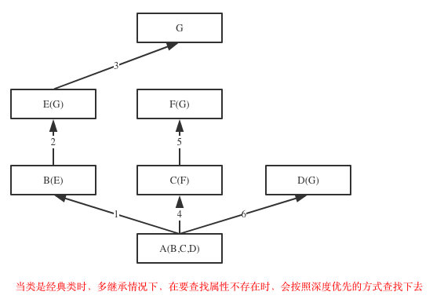
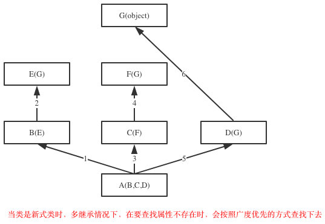

__init__首先明确一点,在面向对象之前我们一直都是按照面向过程的方式来编写程序!
面向过程的程序设计：核心是过程二字，过程指的是解决问题的步骤，即先干什么再干什么......面向过程的设计就好比精心设计好一条流水线，是一种机械式的思维方式。
优点是：复杂度的问题流程化，进而简单化（一个复杂的问题，分成一个个小的步骤去实现，实现小的步骤将会非常简单）
缺点是：一套流水线或者流程就是用来解决一个问题，生产汽水的流水线无法生产汽车，即便是能，也得是大改，改一个组件，牵一发而动全身。
应用场景：一旦完成基本很少改变的场景，著名的例子有Linux內核，git，以及Apache HTTP Server等。
当今时代背景下,通常应用程序对扩展性和维护性要求都是非常高的,为什么?想想qq,微信,是不是不断的在添加新功能?,也就是说一款应用程序诞生后,都需要不断的更新维护
面向对象编程——Object Oriented Programming，简称OOP，是一种程序设计思想。
它将对象作为程序的基本单元
将数据和处理数据的程序封装到对象中
以提高软件的重用性、灵活性和扩展性为首要目的
案例分析1:把大象装进冰箱如何实现
案例分析2:要开一家公司
面向对象编程的优点:
缺点:
应用场景:
用一个例子来说明面向对象与面向过程的区别:
话说三国时期曹军于官渡大败袁绍,酒席之间,曹操诗兴大发,吟道:喝酒唱歌,人生真爽! 众将直呼:"丞相好诗",于是命印刷工匠刻板印刷以流传天下;
待工匠刻板完成,交与曹操一看,曹操感觉不妥,说道:"喝酒唱歌,此话太俗,应改为'对酒当歌'较好",于是名工匠重新刻板,当时还没有出现活字印刷术,如果样板要改,只能重新刻板,工匠眼看连夜刻版之工，彻底白费，心中叫苦不迭。可也只得照办。
版样再次出来请曹操过目，曹操细细一品，觉得还是不好，说”人生真爽太过直接，应该改问语才够意境，因此应改为‘对酒当歌，人生几何？’“，于是....
在活字印刷术还没出现之前，如果版样有改动，只能重新雕刻。而且在印刷完成后，这个样板就失去了它的价值，如果需要其他样板只能重新雕刻。而活字印刷术的出现就大大改善了印刷技术。如上例”喝酒唱歌，人生真爽“，如果用活字印刷，只需要改四个字就可，其余工作都未白做。岂不快哉!!
活字印刷也反应了OOP。当要改动时，只需要修改部分，此为 可维护；当这些字用完后，并非就完全没有价值了，它完全可以在后来的印刷中重复使用，此乃 可复用；此诗若要加字，只需另刻字加入即可，这就是 可扩展；字的排列可以横排，也可以竖排，此是 灵活性好。
上述案列反应了OOP的优点,即可维护性高,扩展性强,复用性高! 这些特点非常适用于用户需求变化频繁的互联网应用程序,这是学习OOP的重要原因
但是OOP设计的程序需涉及类与对象,相应的复杂度会提高!
并非所有程序都需要较高的扩展性,例如系统内核,一旦编写完成,基本不会再修改,使用面向过程来设计则更适用
类和对象是面向对象编程中最核心的两个概念
对象是特征与技能的结合体
如:演员张一山,姓名和职业是他的特征,演戏是他的行为,按照这样的定义,生活中到处都是对象
在程序中:
用变量来表示对象的特征,用函数表示对象的技能
将这些变量和函数结合在一起,形成一个整体,就是对象,这是面向对象的精髓所在!
对象的另一种理解方式
变量的作用数存储数据,函数的作用数处理数据
对象是将数据与处理数据的函数绑定在一起
类就是类型,类别,种类; 是一系列对象中相似特征与技能的结合体
在生活中是一种抽象概念,例如人类,是不具体的
如某个对象属于人类,可以通过类别,了解这个对象具备的特征和技能
反过来看类就是对象的模板,同一类的对象,具备相同的特征和行为
现实生活中,通过对对象的分析总结,得到类型;用类型来标识不同对象之间的差异;
在程序中,同样用于标识不同对象之间的差异
另一个重要的功能是作为对象的模板,例如学生类,无论是哪个学生都具备学习这个方法,既然是相同的就没必要为每个对象单独编写,学生类负责提供这些相同的方法;
OOP第一步要做的就是定义需要的类
以学生类Student为例，在Python中，定义类通过class关键字：
class Student:
passclass后面紧接着是类名，即Student，遵循python编码规范,类名通常是大写开头的单词,多个单词时使用驼峰命名法
创建对象也称之为实例化,定义好Student类后,就可以根据Student类创建出Student的实例，创建实例通过类名加上()实现：
stu1 = Student()
print(stu1)
#输出 <__main__.Student object at 0x10b11d588>
print(Student)
#输出 <class '__main__.Student'>根据输出可以看到
变量名stu1指向一个Student类的实例,0x10b11d588是实例的内存地址,每个实例的地址都不相同,
Student本身则是一个类(class)
对象是特征(属性)与行为(方法)的结合体
stu这个对象目前不具备任属性和方法,要为其添加属性可以在创建对象后使用点语法(变量名加 . )比如为stu对象添加name属性
stu1.name = "Jerry"同样通过点语法来获取对象的属性值
print(stu1.name)
#输出 Jerry用于为对象的属性设置初始值的函数
在类的实例(对象)中,一些属性是必须存在的,就可以使用初始化函数来完成,比如Student对象中的name属性,它是必须的,用于唯一标识一个学生
class Student:
def __init__ (self,name):
print("init run")
self.name = name执行过程:
在创建对象时Student("jack")会申请新的内存空间用于保存对象数据,接着自动调init函数
注意:
__init__函数要求第一个参数必须是self,该参数表示需要被初始化的对象本身,这样就可以将name属性绑定到对象上
可以将self改为其他任意的名称,但为了保证易读性通常是self,额外的参数须位于self之后
有了__init__方法，在创建实例的时候，就不能传入空的参数了，必须传入与__init__方法匹配的参数，但self不需要传，Python解释器自己会把实例变量传进去：
# stu1 = Student()
# 以上代码将抛出异常:TypeError: __init__() missing 1 required positional argument: 'name'
stu1 = Student("jack")
# 输出 init run
print(stu1.name)
# 输出 jack小结:
可以将类中的内容都称之为属性,变量称为数据属性,函数就叫函数属性
类中可以声明变量来表示数据属性,为Student类添加数据属性和函数属性
class Student:
school = "Tsinghua" #数据属性
def say_hello(self):#函数属性
print("hello i am a student")
def __init__ (self,name): #初始化函数
self.name = name
也可以使用点语法在创建对象后为对象增加数据属性
stu = Student("Maria")
stu.age = 20问题1:在类中声明的数据属性和创建对象后为增加的数据属性,有什么区别?
类中的数据属性是所有对象共享的
创建对象后为增加的数据属性,是这个对象特有的,去其他对象无关
问题2:类中声明的数据属性和创建对象后为增加的数据属性,其访问属性是怎样的?
优先查找对象自己的名称空间,如果没有则在类中找,如果类中也没有则到父类中找,直到找到为止,如果父类中也没有则抛出异常
!!!注意!!!
此处父类可能也有父类,会一直沿着继承关系查找到最终的父类Object,该继承关系,后续会详细讨论!
案列:网页中折叠此处
stu1 = Student("Jack")
stu2 = Student("Rose")
#1.类中的数据属性是所有对象共享的
print(stu1.school)
print(stu2.school)
#输出 Tsinghua
#输出 Tsinghua
#2.类中的数据属性访问的是同一块内存
print(id(stu1.school))
print(id(stu2.school))
#输出 4470412656
#输出 4470412656
#3.类的函数属性是绑定给对象使用的,bound method称为绑定方法,每个对象的绑定方法内存地址不一样
print(stu1.say_hello)
print(stu2.say_hello)
#输出 <bound method Student.say_hello of <__main__.Student object at 0x10cc405f8>>
#输出 <bound method Student.say_hello of <__main__.Student object at 0x10cc40630>>
#4.优先访问对象自己的名称空间
# 修改stu1的学习属性为北京大学 会在自stu1的名称空间增加school属性
stu1.school = "Beijing"
print(stu1.__dict__)
print(stu2.__dict__)
#输出 {'name': 'Jack', 'school': 'Beijing'}
#输出 {'name': 'Rose'}
#4.1再次查看学校属性
print(stu1.school)
print(stu2.school)
#输出 Beijing
#输出 Tsinghua
#__dict__用于访问对象的名称空间 本质是一个字典类型数据,存储名称与值的映射关系属性查找顺序:对象->类->父类
先理清方法,函数,技能的关系:
生活中对象的技能在程序中用函数表示
函数在面向对象中称之为方法,换种称呼而已!
如此说来,绑定方法也就是绑定函数
在使用面向对象之前,数据与处理数据的函数是独立的没有任何联系,在调用函数时需要手动传入参数,如果要处理的数据有很多,参数的传递就是一个非常麻烦的事情,
原始的处理方式:函数 传参
问题1 调用函数时传入参数,如果要处理的数据有很多,编写了很多重复的代码,代码的阅读性很差
问题2 后期如果每次处理的数据个数变多了,函数需要修改参数列表,导致以前写的所有代码都需要修改,扩展性非常差
问题3 如果传入了错误的数据,比如需要整型却传入了字符串,造成函数无法正常工作
绑定方法的处理方式:
1.调用方法时传入对象,对象中包含了需要的所有数据,减少重复代码
2.后期数据变化时,修改类对象中的属性,方法中增加相应的处理代码,而方法参数不会发生变化,提高了扩展性
3.方法与对象进行绑定,没有对象则无法使用方法,并且在创建对象的初始化方法中,已经确定了各个属性数据时正确的,如此一来避免了传入使用错误数据执行函数造成的问题
简单的说,就是将数据与处理数据的函数绑定在一起,没有数据则根本不需要处理数据的函数,反过来要执行处理数据的函数则必须提供要被处理的数据
一：绑定方法
1.绑定到对象的方法：没有被任何装饰器装饰的方法。
在类中定义的函数默认都是绑定到对象的方法 特点:参数的第一个必须是self 表示当前对象本身,使用对象来调用,调用时会自动传入对象
2.绑定到类的方法：用classmethod装饰器装饰的方法。
特点:参数的第一个必须是cls表示当前类本身,使用类名来调用,调用时会自动传入类
二：非绑定方法：用staticmethod装饰器装饰的方法
特点:不与类或对象绑定，类和对象都可以调用，但是没有自动传值那么一说。就是一个普通函数
不过由于作用域在类中所以需要使用类或对象类调用
class Student:
school = "Tsinghua"
def say_hello(self):# 绑定到对象的方法
print(self)
print("hello i am a student my name is %s" % self.name)
def __init__ (self,name): #绑定到对象的方法
self.name = name
@classmethod # 绑定到类的方法
def school_info(cls):
print(cls)
print("the student from %s" % cls.school)
stu1 = Student("Jack")
print(stu1)
#输出 <__main__.Student object at 0x1063112e8>
#1.调用对象绑定方法
stu1.say_hello()
#输出 <__main__.Student object at 0x1063112e8>
#输出 hello i am a student my name is Jack
#查看对象绑定方法
print(stu1.say_hello)
#输出 <bound method Student.say_hello of <__main__.Student object at 0x10552b2e8>>
#含义 这个绑定方法是Student类中的say_hello函数,绑定到地址为0x10552b2e8的Student对象
#绑定方法本质上也是函数 只要能找到它就能调用它所以你可以这样来调用它
Student.say_hello(stu1)
#输出 <__main__.Student object at 0x103818390>
#输出 hello i am a student my name is Jack
print(Student)
#输出 <class '__main__.Student'>
#2.调用类绑定方法
Student.school_info()
#输出 <class '__main__.Student'>
#输出 the student from Tsinghua
#查看类绑定方法
print(Student.school_info)
#输出 <bound method Student.school_info of <class '__main__.Student'>>
#含义 这个绑定方法是Student类中的school_info函数,绑定到Student这个类
绑定到类的方法与绑定到对象的方法总结
异同点:
相同
绑定方法调用时都有自动传参的效果
绑定到谁给谁就由谁来调用
不同
绑定到类的方法自动传入当前类
绑定到对象的方法自动传入当前对象
另外:
绑定方法中的self 和 cls参数名 是可以随意修改的,但是self和cls是约定俗成的写法,为了提高可读性不建议修改
1.创建Student类
2.拥有以下属性:
姓名 性别 年龄 学校 班级
3.拥有以下方法
save(name) 其作用是将这个对象序列化到文件中
get_obj(name) 其作用是根据name从文件中反序列化为得到一个对象
分析save方法和get_obj 应该作为绑定给对象还是绑定给类
需求设计王者荣耀中的英雄类,每个英雄对象可以对其他英雄对象使用技能
具备以下属性
英雄名称,等级,血量
和Q_hurt,W_hurt,E_hurt 三个属性,表示各技能的伤害量
具备以下技能
Q W E
三个技能都需要一个敌方英雄作为参数,当敌方血量小于等于0时角色死亡
代码实现:
封装指的是隐藏对象的属性和实现细节，仅对外公开接口，控制程序中属性的访问权限；
python中的权限分为两种
1.公开 外界可以直接访问和修改
2.私有 外界不能直接访问和修改,在当前类中可以直接修改和访问
一.封装属性
对于属性而言,封装就为了限制属性的访问和修改,其目的是为了保护数据安全
例如:
学生对象拥有,姓名,性别,年龄,和身份证号,分数;其中身份证是一个相对隐私的数据,不应该让外界访问到;
分数属性,是一个非常关键的数据,决定学员能不能正常毕业,不应被随意修改;
二.封装方法
一个大的功能很多情况下是由很多个小功能组合而成的,而这些内部的小功能对于用户而言是没有意义的,所以封装方法的目的是为了隔离复杂度;
例如:
电脑的开机功能,内部需要启动BIOS,读取系统配置,启动硬盘,载入操作系统,等等一系列复杂的操作,但是用户不需要关心这些实现逻辑,只要按下开机键等待开机即可;
在属性名前添加两个下划线__,将其设置为私有的
1.封装数据属性实例:网页中折叠
class Student:
def __init__(self,name,gender,age,id,score): # 初始化函数
self.name = name
self.gender = gender
self.age = age
self.__id = id # 将id设置为私有的
self.__score = score # 将score设置为私有的
def test(self):
print(self.__id)
print(self.__score)
stu = Student("Jack","man",20,"320684198901010001",780)
#1.访问私有属性测试
#print(stu.id) # 直接访问到隐私数据
#print(stu.__id) # 换种写法
#以上两行代码均输出相似的错误
#Traceback (most recent call last):
# File "/Users/jerry/PycharmProjects/备课/写课件/test.py", line 102, in <module>
# print(stu.id)
#AttributeError: 'Student' object has no attribute 'id'
#错误含义 在Student类的对象中没有一个id或__id属性
#2.修改私有属性测试
stu.score = 1 # 直接修改私有属性 由于语法特点,相当于给stu对象增加score属性
stu.__score = 2 # 直接修改私有属性 由于语法特点,相当于给stu对象增加__score属性
print(stu.score)
print(stu.__score)
#输出 1
#输出 2
#看起来已经被修改了 调用函数来查看私有属性是否修改成功
stu.test()
#输出 320684198901010001
#输出 780
# 私有的数据没有被修改过思考:封装可以明确地区分内外，封装的属性可以直接在内部使用，而不能被外部直接使用，然而定义属性的目的终归是要用，外部要想用类隐藏的属性，需要为其提供接口，让外部能够间接地使用到隐藏起来的属性，那这么做的意义何在?
答:可以在接口附加上对该数据操作的限制，以此完成对数据属性操作的严格控制。
class Teacher:
def __init__(self,name,age):
# self.__name=name
# self.__age=age
self.set_info(name,age)
def tell_info(self):
print('姓名:%s,年龄:%s' %(self.__name,self.__age))
def set_info(self,name,age):
if not isinstance(name,str):
raise TypeError('姓名必须是字符串类型')
if not isinstance(age,int):
raise TypeError('年龄必须是整型')
self.__name=name
self.__age=age
t=Teacher('egon',18)
t.tell_info()
t.set_info('egon',19)
t.tell_info()2.封装函数属性实例:网页中折叠
#取款是功能,而这个功能有很多功能组成:插卡、密码认证、输入金额、打印账单、取钱
#对使用者来说,只需要知道取款这个功能即可,其余功能我们都可以隐藏起来
#这么做即隔离了复杂度,同时也提升了安全性
class ATM:
def __card(self):
print('插卡')
def __auth(self):
print('用户认证')
def __input(self):
print('输入取款金额')
def __print_bill(self):
print('打印账单')
def __take_money(self):
print('取款')
def withdraw(self):
self.__card()
self.__auth()
self.__input()
self.__print_bill()
self.__take_money()
a=ATM()
a.withdraw()#其实这仅仅这是一种变形操作且仅仅只在类定义阶段发生变形
#类中所有双下划线开头的名称如__x都会在类定义时自动变形成：_类名__x的形式：
class A:
__N=0 #类的数据属性就应该是共享的,但是语法上是可以把类的数据属性设置成私有的如__N,会变形为_A__N
def __init__(self):
self.__X=10 #变形为self._A__X
def __foo(self): #变形为_A__foo
print('from A')
def bar(self):
self.__foo() #只有在类内部才可以通过__foo的形式访问到.
#A._A__N是可以访问到的，
#这种，在外部是无法通过__x这个名字访问到。
a = A()
print(a.__dict__)
#输出 {'_A__X': 10}
#定义运行阶段的赋值操作
a.__Y = 1
print(a.__dict__)
#输出 {'_A__X': 10, '__Y': 1} __y并没有发生变形
"""
变形原理总结:
1.这种机制也并没有真正意义上限制我们从外部直接访问属性，知道了类名和属性名就可以拼出名字：_类名__属性，然后就可以访问了，如a._A__N，即这种操作并不是严格意义上的限制外部访问，仅仅只是一种语法意义上的变形，主要用来限制外部的直接访问。
2.变形的过程只在类的定义时发生一次,在定义后的赋值操作，不会变形
"""5.隐藏的函数不会被子类覆盖
property是一个装饰器,将一个方法伪装成普通属性,其特殊之处在于,该方法会在修改属性值时自动执行
与之对应的是setter与deleter装饰器:
setter装饰的方法会在修改属性值时自动执行
deleter装饰的方法会在删除属性值自动执行
当我们将一个属性设置为私有之后,就无法直接访问它们了,需要为其创建两个方法,一个用于访问,一个用于修改 ,但是对于使用者而言,私有的和普通都是属性,然而一个可以用点来访问,用等号来修改,另一个却要调用函数来存取,这就违反了统一访问原则
class Foo:
def __init__(self,val):
self.__NAME=val #将所有的数据属性都隐藏起来
@property
def name(self):
return self.__NAME #obj.name访问的是self.__NAME(这也是真实值的存放位置)
@name.setter
def name(self,value):
if not isinstance(value,str): #在设定值之前进行类型检查
raise TypeError('%s must be str' %value)
self.__NAME=value #通过类型检查后,将值value存放到真实的位置self.__NAME
@name.deleter
def name(self):
raise TypeError('Can not delete')
f=Foo('Jack')
print(f.name) # 访问property属性
#输出 Jack
f.name="Rose" # 修改property属性 抛出异常'TypeError: 10 must be str'
del f.name # 删除property属性 抛出异常'TypeError: Can not delete' 总结:property的作用是避免使用普通属性和私有属性时的方式发生变化
什么是继承
为什么需要继承
存在继承后的属性查找顺序
派生
在子类重用父类方法
经典类与新式类
菱形继承的问题
mro列表
继承是一种关系,通过继承关系,一个对象可以直接使用另一个对象拥有的内容,例如王思聪继承王建林,王思聪就可以使用王健林拥有的财产!
被继承的一方称之为父,即王健林; 继承的一方称之为子,即王思聪
OOP继承描述的是两个类之间的关系,通过继承,一个类可以直接使用另一个类中已定义的方法和属性;
被继承的称之为父类或基类,继承父类的类称之为子类;
在python3中创建类时必然继承另一个类,如果没有显式的指定父类,则默认继承object类; object是根类 所有类都直接或间接的继承object
1.减少代码重复
2.为多态提供必要的支持,(关于多态下节会详细讨论!)
在类名后面的括号中指定要继承的父类名称 class 类名(父类名):
案例:在选课系统中,有老师和学生两种角色,老师拥有姓名,性别,年龄,学生也拥有姓名,性别,年龄,使用面向对象编程思想,可以将老师和学生定义为两个为不同的类
class Teacher:
def __init__(self,name,gender,age):
self.name = name
self.gender = gender
self.age = age
def say_hi(self):
print("hi my name is %s age is %s gender is %s" % (self.name,self.age,self.gender))
class Student:
def __init__(self,name,gender,age):
self.name = name
self.gender = gender
self.age = age
def say_hi(self):
print("hi my name is %s age is %s gender is %s" % (self.name,self.age,self.gender))
#创建两个对象
t1 = Teacher("Jack","man",20)
t1.say_hi()
s1 = Student("Maria","woman",20)
s1.say_hi()两个类中的内容完全一致,则可以通过继承来重用代码
class Teacher:
def __init__(self,name,gender,age):
self.name = name
self.gender = gender
self.age = age
def say_hi(self):
print("hi my name is %s age is %s gender is %s" % (self.name,self.age,self.gender))
class Student(Teacher): #指定Teacher类继承Student类
pass
#创建两个对象
t1 = Teacher("Jack","man",20)
t1.say_hi()
s1 = Student("Maria","woman",20)
s1.say_hi()继承描述的是子类与父类之间的关系,在上面的例子中,Student继承Teacher完成了代码的重用,但是很明显老师类不是学生类的父类,学生类也不属于老师类,这样的继承关系在逻辑上是错误的;OOP的概念来自于现实世界,所以继承应当遵循现实世界的逻辑;
现在暂且不考虑逻辑错误,来看这样一个情况:
Teacher和Student由于存在相同的属性,为了减少重复代码,让两个逻辑上没有继承关系的类,产生了继承关系,如果后期Teacher类中增加了教学的方法,由于继承关系的存在,学生类也会拥有教学的方法,这是不合理的;
应当将Teacher与Student中完全相同的部分抽取出来,放到另一个类中,并让Teacher与Student去继承它,这个类称之为公共父类 ,但是这个类与实际的业务需求是无关的在现实中也不实际存在,它的作用仅仅是存储相同代码以减少重复;这一过程我们称之为抽象;
综上所述,正确思路是:先抽象在继承
# 抽取老师和学生的相同内容 形成一个新的类,作为它们的公共父类
class Person:
def __init__(self,name,gender,age):
self.name = name
self.gender = gender
self.age = age
def say_hi(self):
print("hi my name is %s age is %s gender is %s" % (self.name,self.age,self.gender))
class Teacher(Person): #指定Teacher类继承Person类
pass
class Student(Person): #指定Student类继承Person类
pass
#创建两个对象
t1 = Teacher("Jack","man",20)
t1.say_hi()
s1 = Student("Maria","woman",20)
s1.say_hi()抽象最主要的作用是划分类别（可以隔离关注点，降低复杂度）,每个类之干自己的事情,多个类相同的事情交给父类来干
在开发程序的过程中，如果我们定义了一个类A，然后又想新建立另外一个类B，但是类B的大部分内容与类A的相同时
不需要从头开始写一个类B，这就用到了类的继承的概念。
通过继承的方式新建类B，让B继承A，B会‘遗传’A的所有属性(数据属性和函数属性)，实现代码重用
用已经有的类建立一个新的类，这样就重用了已经有的软件中的一部分甚至大部分，大大节省了编程工作量，这就是常说的软件重用，不仅可以重用自己的类，也可以继承别人的，比如标准库，来定制新的数据类型，大大缩短了软件开发周期，对大型软件开发来说，意义重大
一个类必然继承另一个类,被继承的类也有可能继承了其他类,相当于C继承B,B又继承A
此时查找属性的顺序是:
对象本身的名称空间 - > 类的名称空间 -> 父类的名称空间 -> 父类的父类名称空间 ->...object类
会沿着继承关系一直往后查找,直到找到为止,由于object是所有类的根类,所以如果找不着最后都会查找object类!
class Foo:
def f1(self):
print('Foo.f1')
def f2(self):
print('Foo.f2')
self.f1()
class Bar(Foo):
def f1(self):
print('Bar.f1')
b=Bar()
b.f1()
#输出 Bar.f1
b.f2()
#输出 Foo.f2当父类提供的属性无法完全满足子类的需求时,子类可以增加自己的属性或非法,或者覆盖父类已经存在的属性,此时子类称之为父类的派生类;
在子类中如果出现于父类相同的属性名称时,根据查找顺序,优先使用子类中的属性,这种行为也称为覆盖
从Person类派生出来的Teacher类
# 抽取老师和学生的相同内容 形成一个新的类,作为它们的公共父类
class Person:
def __init__(self,name,gender,age):
self.name = name
self.gender = gender
self.age = age
def say_hi(self):
print("my name is %s age is %s gender is %s" % (self.name,self.age,self.gender))
class Teacher(Person): #指定Teacher类继承Person类
# Teacher类从Person类中继承到了say_hi方法 但是,老师打招呼时应当说出自己的职业是老师,所以需要
# 定义自己的不同的实现方式
def say_hi(self):
print("hi i am a Teacher")
#print("my name is %s age is %s gender is %s" % (self.name,self.age,self.gender))
#上一行代码与父类中完全相同,可以直接调用父类提供的方法
Person.say_hi(self)
# 创建Teacher对象
t1 = Teacher("Jack","man",20)
t1.say_hi()
#输出 hi i am a Teacher
# my name is Jack age is 20 gender is man在子类中，新建的重名的函数属性，在编辑函数内功能的时候，有可能需要重用父类中重名的那个函数功能，应该使用调用普通函数的方式，即：类名.func()，此时就与调用普通函数无异了，因此即便是self参数也要为其传值
很多情况下 子类中的代码与父类中仅有小部分不同,却不得不在子类定义新的方法,这时候可以在子类中调用父类已有的方法,来完成大部分工作,子类仅需编写一小部分与父类不同的代码即可
在子类中有两种方式可以重用父类中的代码
1.使用类名直接调用 ,该方式与继承没有关系,即时没有继承关系,也可以调用
2.使用super()
class Vehicle: #定义交通工具类
Country='China'
def __init__(self,name,speed,load,power):
self.name=name
self.speed=speed
self.load=load
self.power=power
def run(self):
print('开动啦...')
class Subway(Vehicle): #地铁
def __init__(self,name,speed,load,power,line):
#super(Subway,self) 就相当于实例本身 在python3中super()等同于super(Subway,self)
super().__init__(name,speed,load,power)
self.line=line
def run(self):
print('地铁%s号线欢迎您' %self.line)
super(Subway,self).run()
class Mobike(Vehicle):#摩拜单车
pass
line13=Subway('中国地铁','180m/s','1000人/箱','电',13)
line13.run()即使没有直接继承关系，super仍然会按照mro继续往后查找
而第一种方式明确指定了要到哪一个类中去查找,找不到则直接抛出异常
#A没有继承B,但是A内super会基于C.mro()继续往后找
class A:
def test(self):
super().test()
class B:
def test(self):
print('from B')
class C(A,B):
pass
c=C()
c.test() #打印结果:from B
print(C.mro())
#[<class '__main__.C'>, <class '__main__.A'>, <class '__main__.B'>, <class 'object'>]*当你使用super()函数时,Python会在MRO列表上继续搜索下一个类。如果每个重定义的方法统一使用super()并只调用它一次,那么控制流最终会遍历完整个MRO列表,每个方法也只会被调用一次(注意注意注意：使用super调用的所有属性，都是从MRO列表当前的位置往后找，千万不要通过看代码去找继承关系，一定要看MRO列表)
软件重用的重要方式除了继承之外还有另外一种方式，即：组合
组合指的是，在一个类中以另外一个类的对象作为数据属性，称为类的组合
class Equip: #武器装备类
def fire(self):
print('release Fire skill')
class Riven: #英雄Riven的类,一个英雄需要有装备,因而需要组合Equip类
camp='Noxus'
def __init__(self,nickname):
self.nickname=nickname
self.equip=Equip() #用Equip类产生一个装备,赋值给实例的equip属性
r1=Riven('锐雯雯')
r1.equip.fire() #可以使用组合的类产生的对象所持有的方法组合与继承都是有效地利用已有类的资源的重要方式。但是二者的概念和使用场景皆不同，
1.继承的方式
通过继承建立了派生类与基类之间的关系，它是一种'是'的关系，比如白马是马，人是动物。
当类之间有很多相同的功能，提取这些共同的功能做成基类，用继承比较好，比如老师是人，学生是人
2.组合的方式
用组合的方式建立了类与组合的类之间的关系，它是一种‘有’的关系,比如教授有生日，教授教python和linux课程，教授有学生s1、s2、s3...
在Java和C#中子类只能继承一个父类，而Python中子类可以同时继承多个父类，如A(B,C,D)
如果继承关系为非菱形结构，则会按照先找B这一条分支，然后再找C这一条分支，最后找D这一条分支的顺序直到找到我们想要的属性
如果继承关系为菱形结构，那么属性的查找方式有两种，分别是：深度优先和广度优先


这里谈到的广度优先不是简单的从左到右,像图中标识的依然会按照深度一层一层上找,但是如果下一个要找的类与继承列表中的其他类存在相同父类(就像E 与 F有共同父类G),则不会查找公共父类,这一次深度查找结束,开始下一条查找路径(C -> F),
对于你定义的每一个类，python通过一个算法算出一个查找顺序存放在(MRO)列表中，这个MRO列表就是一个简单的所有基类的线性顺序列表，例如:
F.mro() #等同于F.__mro__
[<class '__main__.F'>, <class '__main__.D'>, <class '__main__.B'>, <class '__main__.E'>, <class '__main__.C'>, <class '__main__.A'>, <class 'object'>]为了实现继承,python会在MRO列表上从左到右开始查找基类,直到找到第一个匹配这个属性的类为止。
而这个MRO列表的构造是通过一个C3线性化算法来实现的。不需要深究这个算法的原理,它实际上就是合并所有父类的MRO列表并遵循如下三条准则:
1.子类会先于父类被检查
2.多个父类会根据它们在列表中的顺序被检查
3.如果对下一个类存在两个合法的选择,选择第一个父类
usb就是一种接口,电源插座也是接口,接口其实是一套协议规范;
电脑提供USB接口,可以使用任何遵循USB接口协议的设备,其他设备只要按照USB协议的要求来设计产品,就能够被电脑使用,而电脑根本不需要关心这个设备具体是如何实现功能的
1.让使用者无需关心对象的类是什么，只需要的知道这些对象都具备某些功能就可以了，这极大地降低了使用者的使用难度。
2.使得外部使用者可以不加区分的处理所有接口兼容的对象
2.1：就好象linux的泛文件概念一样，所有东西都可以当文件处理，不必关心它是内存、磁盘、网络还是屏幕（当然，对底层设计者，当然也可以区分出“字符设备”和“块设备”，然后做出针对性的设计：细致到什么程度，视需求而定）。
2.2：再比如：我们有一个汽车接口，里面定义了汽车所有的功能，然后由本田汽车的类，奥迪汽车的类，大众汽车的类，他们都实现了汽车接口，这样就好办了，大家只需要学会了怎么开汽车，那么无论是本田，还是奥迪，还是大众我们都会开了，开的时候根本无需关心我开的是哪一类车，操作手法（函数调用）都一样
在python中根本就没有一个叫做interface的关键字，如果非要去模仿接口的概念
1.可以借助第三方模块：
http://pypi.python.org/pypi/zope.interface
2.也可以使用继承来间接的实现接口
继承的两种用途
一：继承基类的方法，并且做出自己的改变或者扩展（代码重用）;
二：声明某个子类兼容于某基类，定义一个接口类（模仿java的Interface），接口类中定义了一些接口名（就是函数名）但并未实现具体的功能，子类继承接口类，并且实现接口中的功能
class IOInterface:#定义接口Interface类来模仿接口的概念，python中压根就没有interface关键字来定义一个接口。
def read(self): #定接口函数read
pass
def write(self): #定义接口函数write
pass
class Txt(Interface): #文本，具体实现read和write
def read(self):
print('文本数据的读取方法')
def write(self):
print('文本数据的读取方法')
class Sata(Interface): #磁盘，具体实现read和write
def read(self):
print('硬盘数据的读取方法')
def write(self):
print('硬盘数据的读取方法')
class Process(Interface):
def read(self):
print('进程数据的读取方法')
def write(self):
print('进程数据的读取方法')上面的代码只是看起来像接口,但是子类完全可以不用去实现接口，没有强制性的要求子类必须实现父类的方法,这就用到了抽象类
什么叫做抽象?
不具体,不清晰的就是抽象的,当我们知道某些对象具备一些功能,但是并不清楚这些功能是如何实现的,那对于我们而言这个功能就是抽象的; 抽象类也一样,如果这个类中的方法是不具体(没有实现功能的代码)的抽象的,那么这个类也是抽象的;
抽象类是一个特殊的类，它的特殊之处在于只能被继承，不能被实例化,且有存在没有实现的方法;
抽象类可以实现强制性要求子类必须实现父类声明的方法,这样一来只要一个类是这个抽象类的子类,那么他必然实现了抽象类中的方法,对于使用者而言,只要知道抽象类中的方法,就可以无差别的使用,这个抽象类的任何子类,大大降低了使用成本!
#_*_coding:utf-8_*_
#一切皆文件
import abc #利用abc模块实现抽象类
class All_file(metaclass=abc.ABCMeta):
all_type='file'
@abc.abstractmethod #定义抽象方法，无需实现功能
def read(self):
'子类必须定义读功能'
pass
@abc.abstractmethod #定义抽象方法，无需实现功能
def write(self):
'子类必须定义写功能'
pass
# class Txt(All_file):
# pass
#
# t1=Txt() #报错,子类没有定义抽象方法
class Txt(All_file): #子类继承抽象类，但是必须定义read和write方法
def read(self):
print('文本数据的读取方法')
def write(self):
print('文本数据的读取方法')
class Sata(All_file): #子类继承抽象类，但是必须定义read和write方法
def read(self):
print('硬盘数据的读取方法')
def write(self):
print('硬盘数据的读取方法')
class Process(All_file): #子类继承抽象类，但是必须定义read和write方法
def read(self):
print('进程数据的读取方法')
def write(self):
print('进程数据的读取方法')
wenbenwenjian=Txt()
yingpanwenjian=Sata()
jinchengwenjian=Process()
#这样大家的使用方法时完全一致的,也就是一切皆文件的思想
wenbenwenjian.read()
yingpanwenjian.write()
jinchengwenjian.read()
print(wenbenwenjian.all_type)
print(yingpanwenjian.all_type)
print(jinchengwenjian.all_type)补充:
抽象类中既可以包含抽象方法也可以包含普通方法和属性!
这和接口不同,接口仅仅是协议,所以接口中不应该包含任何具体的实现代码!
多态指的是一类事物有多种形态
例如:
动物有多种形态:
人，狗，猪
在程序中多态指的是,不同对象可以响应相同方法,并可以有自己不同的实现方式
案例分析:
import abc
class Animal(metaclass=abc.ABCMeta): #同一类事物:动物
@abc.abstractmethod
def talk(self):
pass
class People(Animal): #动物的形态之一:人
def talk(self):
print('say hello')
class Dog(Animal): #动物的形态之二:狗
def talk(self):
print('say wangwang')
class Pig(Animal): #动物的形态之三:猪
def talk(self):
print('say aoao')
peo=People()
dog=Dog()
pig=Pig()
#peo、dog、pig都是动物,只要是动物肯定有talk方法
#于是我们可以不用考虑它们三者的具体是什么类型,而直接使用
peo.talk()
dog.talk()
pig.talk()
#更进一步,我们可以定义一个统一的接口来使用
def func(obj):
obj.talk()
func(peo)
func(dog)
func(pig)通过上述案列可以直观的体会到多态的好处,并且它并不是一个新的知识点,python默认就是支持多态的
那么多态的带来的好处是什么?
1.增加了程序的灵活性
以不变应万变，不论对象千变万化，使用者都是同一种形式去调用，如func(animal)
2.增加了程序额可扩展性
通过继承animal类创建了一个新的类，使用者无需更改自己的代码，还是用func(animal)去调用
class Cat(Animal): #动物的另外一种形态：猫
def talk(self):
print('say miao')
def func(animal): #对于使用者来说，自己的代码根本无需改动
animal.talk()
cat1=Cat() #实例出一只猫
func(cat1) #甚至连调用方式也无需改变，就能调用猫的talk功能
say miao
'''
这样我们新增了一个形态Cat，由Cat类产生的实例cat1，使用者可以在完全不需要修改自己代码的情况下。使用和人、狗、猪一样的方式调用cat1的talk方法，即func(cat1)
'''继承一章中指出,继承为多态提供了不要的支持,所有的动物 cat dog pig 它们都要先继承Animal类,这样一来,才能保证,它们都能响应talk方法,不至于在调用时发生异常;
当然如果子类的设计者,完全按照Animal中规定的内容去实现子类,即使没有继承关系的存在,使用者也一样可以像使用其他对象一样使用这个子类对象, 这需要设计者在设计实现类时更加谨慎!
Python崇尚鸭子类型，即‘如果看起来像、叫声像而且走起路来像鸭子，那么它就是鸭子’
python程序员通常根据这种标准来编写程序。例如，如果想编写现有对象的自定义版本，可以继承该对象
也可以创建一个外观和行为像，但与它无任何关系的全新对象，后者通常用于保存程序组件的松耦合度。
例1：利用标准库中定义的各种‘与文件类似’的对象，尽管这些对象的工作方式像文件，但他们没有继承内置文件对象的方法
#二者都像鸭子,二者看起来都像文件,因而就可以当文件一样去用
class TxtFile:
def read(self):
pass
def write(self):
pass
class DiskFile:
def read(self):
pass
def write(self):
pass例2：其实大家一直在享受着多态性带来的好处，比如Python的序列类型有多种形态：字符串，列表，元组，多态性体现如下
#str,list,tuple都是序列类型
s=str('hello')
l=list([1,2,3])
t=tuple((4,5,6))
#我们可以在不考虑三者类型的前提下使用s,l,t
s.__len__()
l.__len__()
t.__len__()
len(s)
len(l)
len(t)